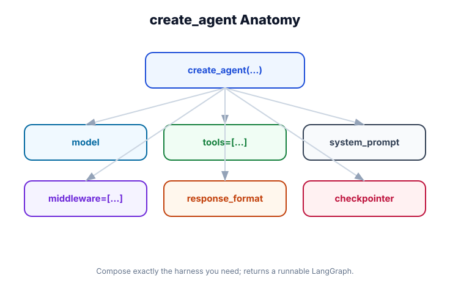

Agents — Deep Dive into create_agent()
What you'll learn: Every parameter of create_agent(), static vs. dynamic configuration, how to define custom agent state (AgentState), all invocation patterns (invoke, stream, batch, async), and how the ReAct loop works under the hood.

↗ Open full size · ⬇ Edit in Excalidraw — labels use real LangChain classes.
The ReAct Loop — Under the Hood
Every LangChain agent runs a ReAct loop (Reasoning + Acting). Understanding this loop is the key to predicting agent behavior, debugging problems, and tuning performance.
Complete create_agent() Reference
init_chat_model(...)) for static config, or a model string like "openai:gpt-4o" for dynamic config (swappable per invocation).@tool) or tool objects. The agent will be able to call any tool in this list. Can also be a callable that returns a list (dynamic tools based on state).dynamic_prompt parameter instead.InMemorySaver() for in-process memory, or a database-backed saver for production. Requires thread_id at invocation time.InMemoryStore() for in-process, or PostgresStore for persistent. Accessible from tools via runtime.store.{"user_name": str, "task_status": str}). Tools can read and update these via Command returns.runtime.context. Never sent to the model.Complete Working Example
from langchain.agents import create_agent
from langchain.chat_models import init_chat_model
from langchain.tools import tool
from langchain_core.messages import HumanMessage
from langgraph.checkpoint.memory import InMemorySaver
from langgraph.store.memory import InMemoryStore
from typing import TypedDict, Annotated
from langgraph.graph.message import add_messages
# ── 1. Custom state schema ────────────────────────────────────────────────────
class AppState(TypedDict):
messages: Annotated[list, add_messages] # always required
# custom fields:
items_retrieved: int
last_search_query: str
# ── 2. Tools ──────────────────────────────────────────────────────────────────
@tool
def search_catalog(query: str, max_results: int = 5) -> list[dict]:
"""Search the product catalog.
Args:
query: Search terms.
max_results: Max products to return (1-20).
"""
# mock implementation
return [{"name": f"Product for '{query}'", "price": 29.99}] * max_results
@tool
def get_stock_level(product_id: str) -> dict:
"""Check stock level for a product.
Args:
product_id: The product ID to check.
"""
return {"product_id": product_id, "in_stock": True, "quantity": 42}
# ── 3. Create the agent ───────────────────────────────────────────────────────
agent = create_agent(
model=init_chat_model("openai:gpt-4o", temperature=0),
tools=[search_catalog, get_stock_level],
system_prompt=(
"You are a helpful product catalog assistant. "
"Search the catalog and check stock levels when asked. "
"Always include prices in your responses."
),
state_schema=AppState,
checkpointer=InMemorySaver(), # enables multi-turn conversations
store=InMemoryStore(), # enables long-term memory
)
# ── 4. Single-turn invocation ─────────────────────────────────────────────────
result = agent.invoke({
"messages": [HumanMessage("Find me blue widgets, check if they're in stock")]
})
print(result["messages"][-1].content)
# ── 5. Multi-turn (requires thread_id with checkpointer) ─────────────────────
config = {"configurable": {"thread_id": "user-session-123"}}
result1 = agent.invoke(
{"messages": [HumanMessage("Search for red gadgets")]},
config=config,
)
print(result1["messages"][-1].content)
# Second turn — agent remembers the first turn!
result2 = agent.invoke(
{"messages": [HumanMessage("Are any of those in stock?")]},
config=config,
)
print(result2["messages"][-1].content) # knows what "those" refers to
# ── 6. Inspect the final state ────────────────────────────────────────────────
state = agent.get_state(config)
print(f"Total messages: {len(state.values['messages'])}")
print(f"Custom field: {state.values.get('items_retrieved')}")Dynamic Tools and Dynamic Prompts
Tools and system prompts can change per-invocation based on state or context:
from langchain.agents import create_agent
from langchain.chat_models import init_chat_model
from langchain.tools import tool
@tool
def admin_tool(action: str) -> str:
"""Perform an admin action (admin users only)."""
return f"Admin action performed: {action}"
@tool
def user_tool(query: str) -> str:
"""Answer a regular user query."""
return f"Here's the answer: {query}"
# Dynamic tools — receives state, returns tool list
def get_tools_for_user(state: dict) -> list:
"""Return different tools based on user role in state."""
role = state.get("user_role", "user")
if role == "admin":
return [admin_tool, user_tool]
return [user_tool]
# Dynamic prompt — called before each model call
def get_system_prompt(state: dict) -> str:
"""Return a personalized system prompt."""
name = state.get("user_name", "there")
role = state.get("user_role", "user")
return f"You are helping {name} (role: {role}). Be concise and professional."
agent = create_agent(
model="openai:gpt-4o",
tools=get_tools_for_user, # callable, not list
dynamic_prompt=get_system_prompt, # called before each model invocation
)All Invocation Patterns
from langchain_core.messages import HumanMessage
import asyncio
# ── Synchronous invoke (blocking) ─────────────────────────────────────────────
result = agent.invoke({"messages": [HumanMessage("Hello")]})
answer = result["messages"][-1].content
# ── Async invoke ──────────────────────────────────────────────────────────────
async def run():
result = await agent.ainvoke({"messages": [HumanMessage("Hello")]})
return result["messages"][-1].content
asyncio.run(run())
# ── Streaming (token by token) ────────────────────────────────────────────────
for chunk in agent.stream(
{"messages": [HumanMessage("Tell me a story")]},
stream_mode="messages"
):
# chunk is (message_or_chunk, metadata)
msg, metadata = chunk
if hasattr(msg, 'content') and msg.content:
print(msg.content, end="", flush=True)
print()
# ── Stream with full state updates ────────────────────────────────────────────
for event in agent.stream(
{"messages": [HumanMessage("Search for something")]},
stream_mode="values" # emits full state after each step
):
# event is the full agent state at each step
last_msg = event["messages"][-1]
print(f"Step: {last_msg.type} - {str(last_msg.content)[:50]}")
# ── Batch processing ──────────────────────────────────────────────────────────
inputs = [
{"messages": [HumanMessage("Query 1")]},
{"messages": [HumanMessage("Query 2")]},
{"messages": [HumanMessage("Query 3")]},
]
results = agent.batch(inputs) # runs all in parallel
for r in results:
print(r["messages"][-1].content)
# ── Input formats — all equivalent ───────────────────────────────────────────
# Dict with role
agent.invoke({"messages": [{"role": "user", "content": "Hi"}]})
# HumanMessage object
agent.invoke({"messages": [HumanMessage("Hi")]})
# Shorthand — just a string (for simple single-turn)
agent.invoke({"messages": "Hi"}) # auto-wrappedIf you create an agent with a checkpointer for multi-turn memory but forget to pass config={"configurable": {"thread_id": "..."}} at invocation, the agent will still run — but it won't save state between turns. Each invocation will start fresh with no memory. Always pass thread_id when using checkpointers.
The agent loop will run a maximum of 25 tool-call iterations before forcing a stop. For complex multi-step tasks this might not be enough. Override: agent.invoke(..., config={"recursion_limit": 50}). Setting this too high without a timeout is a production risk — an infinite loop will keep calling tools (and billing you) until it hits the limit.
Real-World Use Case
🏥 Medical Research Assistant
A research agent uses state_schema to track papers_found, methodology_confirmed, and requires_human_review. Dynamic tools give verified researchers access to full-text paper APIs and experimental databases, while unverified users only get abstract search. The dynamic_prompt personalizes each session based on the researcher's specialty. Thread-based checkpointing allows multi-day research sessions — the agent picks up exactly where it left off.
The ReAct loop is the core: Reason → tool call? → Act → Observe → Reason (repeat). create_agent() has 10 parameters — most are optional. Add checkpointer + thread_id for multi-turn memory. Use state_schema to add custom fields. Use dynamic tools/prompts for per-user customization. Modules 09–15 explore each capability in depth.